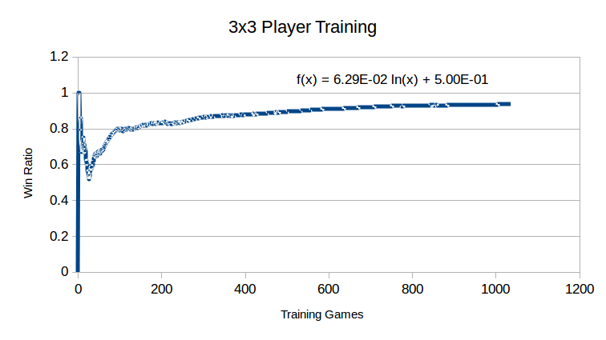

A Neural Net will be made to assess the probability of winning from a game state, with input being n neurons representing the partitions of the board and output being one neuron, with a value representing the probability of winning from the game state. First, a game state table will be made, with entries to represent a game state, and the probability of winning from that game state. After each game the sequence of states will be analyzed, the probability of a state in the winning sequence of moves will be incremented and the probability of winning from a game state in the losing sequence will be decremented. Once the game state table is made the Neural Net will be trained with the game table data and weights adjusted properly with a genetic algorithm using the absolute value of the difference of the output of the net and the table entry value, summed over all entries. Finally once the Neural Net is trained, a Neural Net Player will have the power of a Neural Net to assess its next possible choices of moves, and will pick the move with the assessed highest probability of winning
Tasks:A state of the game DOBO will be modelled in a sense that an object will be created that represents a state of the board at a point in time.
A model of the state class, having a slot that will contain the list of the values of each position of the boardDemo | Code
This method will take a move (list) and a state and return the state after the applied move without changing the original stateDemo | Code
An object for a generic player will be made that will enable for subclasses of a random player, human player, table-lookup player, and a neural net player to be implemented.Totality of Task 2: Demo | Code
A possible moves list will be generated assist in the play of the game. A game object will be modelled, its job being to store all states of the game to assist in training of the neural net, and a filter possible moves method will be implemented that takes a move as a parameter and removes all associated moves from the possible moves list.
A possible moves list will be generated to assist in game playDemo | Code
A game object will be made to store the list of states that the game encountersDemo | Code
A filter possible moves method will be implemented allowing for moves impossible after the last move to be removed from the possible moves listDemo | Code
A random player class, which will be a subclass of the player class will be implemented. A random player will randomly select a move from the possible moves list as its move.Game functionality will also be implemented in the form of a method that has two player parameters and will call their respective make-move methods in a loop with an initially set pm-list and a full-state.Task 4.1: Defining a Random Player
A player that randomly selects a move from the possible move list will be defined.Demo | Code
A generic play method will be implemented allowing for two players to be passed, and their respective make-moves will be called when it is their turn. The game is being updated after each move and the method will return when one of the players has won.Demo | Code
A human player class, which will be a subclass of the player class will be implemented allowing for a human to interact with the game and face other playersDemo | Code
A table of game states with associated data will be crafted, also entries will be canonicalized as to reduce the size of the table. This table will be used to allow the convergence of correct probability values for winning from a game state.Task 5.1: Modelling a State-Probability Tuple
A generic play method will be implemented allowing for two players to be passed, and their respective make-moves will be called when it is their turn. The game is being updated after each move and the method will return when one of the players has won.Demo | Code
An entry in the game state table, being type of tuple, will be modelled. This tuple will hold a state, along with the amount of wins, losses and their quotient.Demo | Code
Methods will be written to transform game states in the manners of horizontal reflection, vertical reflection, and rotation.Demo | Code
A method for determining if two game states are similar using the transformation functions will be implemented.Demo | Code
A method for inserting a state into the game state table will be implemented that will check if it is similar to any other state in the table before adding. If it is similar to any other entry, the entry will be updated accordingly.Demo | Code
Two methods will be implemented, one for retrieving an entry from the game state table given a state and one for retrieving just the probability of an entry given a state.Demo | Code
A player will be modelled that uses a game state table to select its next move. The decision of what move to make will be made by using the possible moves list on the current game state to produce all next possible states. Then a parallel list will be made consisting of the retrieved value of each of those states from the game state table. The player will then select the state parallel to the highest retrieved probability value, and remove the move corresponding to that state from another parallel list structure.Demo | Code
The probability values will be converged through playing a set number of games and processing them in reverse, increasing the probability of winning of the states in the winning move sequence and decreasing the probability of winning of the states in the losing move sequence. For this to happen, a player that uses the game-state-table to select the best move will play a random player, and whenever the random player manages to win, the game will be analyzed, adjusting the probability of each state by a factor of the amount of hits present in the losing game state which will be hit on every analyzation of the game by nature. This will allow for larger adjustments to take place as the table lookup player gains more knowledge about the game. Below you will find a graph of the win ratio of a 3x3 player over time while training, the trend indicating a steady state of 100% is being reached, showing effective training.
Necessary Matrix/Vector functions will be implemented such as dot, matrix multiplication and scalar matrix multiplication to allow for necessary operations needed for the neural net.Demo | Code
A neural-net object will be made, allowing for multiple layers of nodes to be instantiated at the same time, connected by varying weight values.Demo | Code
A genetic algorithm will be implemented to train the weights of a neural network to fit a function to a data set in regards to either a classification or a continuous problem.Task 10.1: Helper Methods for Genetic Algorithm
Helper methods for the genetic will be implemted such as determining the cost of a neural network over a data set, converting a neural net to its representative list of weights and assigning a list of weights to the weights of a given neural network.Demo | Code
An individual for the genetic algorithm will be modeled as well as maninpulated in the manner of mutation and crossover.Demo | Code
The methods for individuals will be applied to a modeled population of individuals to get the general big moves of the genetic algorithm functional.Demo | Code
Another subclass of the player superclass will be implemented, this time being a player that uses the neural net to asses the probability of winning from each of the possible moves, and selecting the move with the highest learned probabilityDemo | Code
The completed totality of the project file, along with the associated research paper and slideshow presentationCode | Paper | Slides